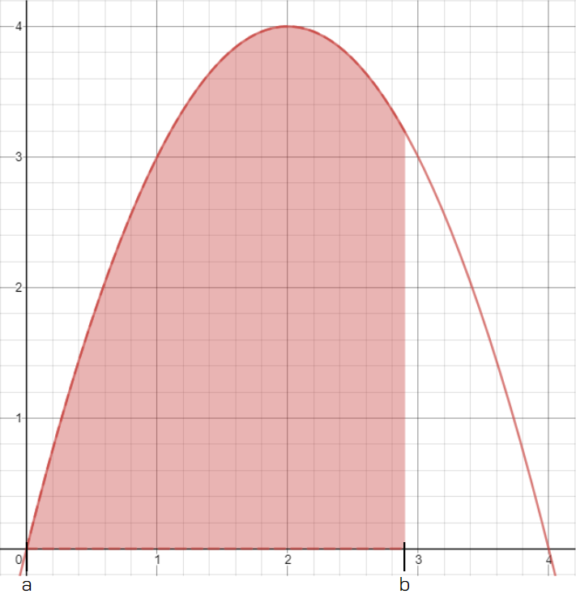

Back to Home
Keaton Hawkins AP Calculus AB Final
Recall the limit definition of a derivative. It's extremely cumbersome to use compared to the differentiation rules outlined in the "Derivatives" section of this website. Nonetheless, it is important because it provides a formal definition for the derivative without any ambiguity. Simultaneously, it helps to make derivatives seem natural and intuitive. There is an analogous limit definition for definite integrals.
Recall what we've learned about definite integrals so far. The definite integral from a to b of a function, f(x), is equal to the two-dimensional graphical area underneath the curve f(x) (the area bound by the curve and the x-axis, that is) between the points x = a and x = b. Finding the area underneath a curve can be a tricky problem; there are no simple area formulas for curves like there are for basic geometric shapes. However, limits give us a powerful tool for finding the exact area under a curve. As shown on the integrals page, we can break this area up into a series of rectangles underneath the curve, each extending from the x-axis to the function. On their own, these rectangles provide only an estimate for the definite integral. However, as the width of each rectangle approaches zero, the number of rectangles approaches infinity, and each rectangle gives the area between the curve and the x-axis at exactly one point. By summing all of these rectangles' areas after we let their widths go to zero, we can find the exact area underneath a curve within a given range on the x-axis. So far, we've used integral notation to represent this:
This notation is read as "the integral from a to b of f(x)dx." It represents the sum of all of the rectangles described above. Remember, you can think of the term "dx" as having a "built-in" limiting process. It goes to zero. The value of the function at a given point is the height of the rectangle at that point, and dx is the width of the rectangle. So, f(x)dx is the area of the rectangle. Thus, the integral above corresponds to the sum of all the infinitesimally thin rectangles underneath the curve f(x), from a to b:

We have a name to represent the sum of any finite number of rectangles under a curve. It's called a Riemann Sum. Let's consider the following situation. Suppose you wanted to estimate the area under the curve f(x) = -x2 + 4x, from 0 to 3, using 6 rectangles. To start, you would need to find the width of each rectangle. That's easy. It's just the range over which you're trying to find the area, divided by the number of rectangles you want. That will ensure that each rectangle within that range has the same width. In our case, we're trying to find the area over a range of 3 units, and we want 6 rectangles, so each one will have a width of 3/6 = 0.5. In general, the width of each rectangle, Δx, can be found by taking the difference between your endpoints and dividing by the number of rectangles you want, n: Δx = (b - a) / n. Our first rectangle will sit on the x-axis from 0 to 0.5. Our second rectangle from 0.5 to 1. Our third from 1 to 1.5, and so on. The height of each rectangle will be determined by the value of the function at the x-value where the rectangle resides. Our first rectangle will rise up until its upper right corner, at an x-value of 0.5, touches the function. So, its height will be f(0.5), or 1.75. So the area of this rectangle will be 1.75 * 0.5 = 0.875. Our second rectangle will have a right edge that sits on the x-value 1, so its height will be f(1), or 3. Thus, its area will be 3 * 0.5 = 1.5. The table below summarizes the areas of each of our six rectangles, and their sum:
| Rectangle |
x-Coordinate of Right Edge |
Height |
Area |
| Rectangle 1 |
0.5 |
f(0.5) = 1.75 |
1.75 * 0.5 = 0.875 |
| Rectangle 2 |
1 |
f(1) = 3 |
3 * 0.5 = 1.5 |
| Rectangle 3 |
1.5 |
f(1.5) = 3.75 |
3.75 * 0.5 = 1.875 |
| Rectangle 4 |
2 |
f(2) = 4 |
4 * 0.5 = 2 |
| Rectangle 5 |
2.5 |
f(2.5) = 3.75 |
3.75 * 0.5 = 1.875 |
| Rectangle 6 |
3 |
f(3) = 3 |
3 * 0.5 = 1.5 |
| Total |
N/A |
N/A |
9.625 |
Remember, this approximation gets closer and closer to the actual area under the curve as the number of rectangles increases and their widths go to zero. In fact, if we take the limit as the number of rectangles goes to infinity, the width of each rectangle goes to zero, and we end up with the precise area under the curve. Ok then, but what do you mean take the limit? Take the limit of what? The limit of the sum of all of the rectangles undernath the curve, of course. How can we write this? By using sigma notation. The area of each rectangle is its height times its width. It's height is the value of the function at the x-coordinate the rectangle sits on. The width is Δx equal to (b - a) / n, where n is the number of rectangles. There's a problem here: the x-coordinate at which the function should be evaluated is different for each rectangle. How can we write a formula that tells us which x-coordinate to use? Well, the first x-coordinate we want is the x coordinate at which our range of area begins, a. Each consecutive x-coordinate after that will be a, plus some multiple of Δx, because the width of each rectangle is the same. So, we can say that the value that should be the input to our function is ci = a + i * Δx. The letter i serves as our index. For the first rectangle, it is 1, for the second rectangle it is 2, and so on. So, we can represent the sum of all of the rectangles with the following expression:
The exact value of our area, then, can be found by taking the limit as the number of rectangles goes to infinity, as explained above:
And that's our limit definition of a definite integral! By the way, it may seem sort of arbitrary that I chose the x-coordinate of the right side of the rectangle to use in my calculations. Why not the left side? Or the middle point of the rectangle? Actually, these are all equally valid methods. When estimating area using a Riemann Sum, questions will usually specify whether they want a right Riemann Sum, a left Riemann Sum, or a midpoint Riemann Sum. Trapezoids also work instead of rectangles. They have a different height on each side. However, these distinctions only make a difference when finding a finite Riemann Sum. Once you take the limit, the width of each rectangle/trapezoid goes to zero. After the limiting process, each rectangle sits on only a single point on the x-axis, so it doesn't matter whether you consider the right or left side of the rectangle.
As with derivatives, there is a much less cumbersome method of finding the value of a definite integral than having to use the limit definition every time. This method is explained in the "Definite Integrals" section. Also, check out the Riemann Sum calculator to use Riemann Sums to estimate the value of any definite integral you'd like. David Coleman, hear my prayer! Bestow upon me a fragment of your might and wisdom, such that I might bring peace to the world.